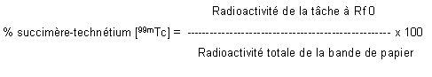

RÉSUMÉ DES CARACTÉRISTIQUES DU PRODUIT
ANSM - Mis à jour le : 21/03/2005
RENOCIS, poudre pour solution injectable. Trousse pour la préparation de la solution injectable de succimère-technétium (99m Tc)
2. COMPOSITION QUALITATIVE ET QUANTITATIVE
Succimère (Acide dimercapotsuccinique - DMSA) .................................................................................. 1 mg
Pour un flacon.
Le produit ne contient pas de conservateur antimicrobien.
Pour la liste complète des excipients, voir rubrique 6.1.
Poudre pour solution injectable en flacon multidose.
4.1. Indications thérapeutiques
Ce médicament est à usage diagnostique uniquement.
Après reconstitution avec une solution de pertechnétate (99mTc) de sodium, la solution peut être utilisée pour la scintigraphie rénale, planaire ou tomographique pour:
· l'examen morphologique du cortex rénal,
· l'évaluation fonctionnelle rénale,
· la localisation de rein ectopique.
4.2. Posologie et mode d'administration
Chez l'adulte de 70 kg, les activités recommandées en injection intraveineuse sont de 30 à 120 MBq.
L'acquisition des images peut commencer 1 à 3 heures après l'injection.
En cas d'insuffisance rénale ou d'obstruction des voies urinaires, il peut être nécessaire de réaliser des acquisitions plus tardives (6 à 24 heures après l'injection).
Chez l'enfant, l'activité à injecter est une fraction de celle utilisée chez l'adulte, calculée en fonction de la masse corporelle de l'enfant selon l'équation suivante:

Dans certains cas, l'ajustement de l'activité en fonction de la surface corporelle est plus approprié:
Aucune connue à ce jour.
4.4. Mises en garde spéciales et précautions d'emploi
Les produits radiopharmaceutiques ne doivent être réceptionnés, utilisés et administrés que par des personnes autorisées dans les services agréés. Leur réception, leur stockage, leur utilisation, leur transfert et leur élimination sont soumis aux réglementations et aux autorisations appropriées des autorités compétentes.
Les produits radiopharmaceutiques doivent être préparés de manière à satisfaire à la fois aux normes de radioprotection et de qualité pharmaceutique. Toutes les précautions appropriées d'asepsie doivent être prises afin de satisfaire aux exigences des Bonnes Pratiques de Fabrication pharmaceutiques.
4.5. Interactions avec d'autres médicaments et autres formes d'interactions
Certains médicaments peuvent affecter la fonction rénale et modifier la fixation du succimère- technétium (99mTc), tels que:
· Chlorure d'ammonium: diminution importante de la fixation rénale du succimère-technétium (99mTc) et augmentation de la fixation hépatique.
· Bicarbonate de sodium: diminution de la fixation rénale du succimère-technétium (99mTc).
· Mannitol: diminution de la fixation rénale du succimère-technétium (99mTc).
La prise de ces médicaments devra, dans la mesure du possible, être interrompue. Dans tous les cas, le patient devra être convenablement hydraté avant l'examen.
Inhibiteurs de l'enzyme de conversion (par exemple, le captopril): chez le patient ayant une sténose unilatérale de l'artère rénale, on peut observer une diminution de la fixation rénale du succimère-technétium (99mTc) par le rein atteint. Ce phénomène est réversible après l'arrêt de l'inhibiteur de l'enzyme de conversion.
Lorsqu'il est nécessaire d'administrer des produits radiopharmaceutiques à la femme en âge de procréer, toute suspicion de grossesse doit être écartée. Toute femme n'ayant pas eu ses règles doit être considérée comme enceinte jusqu'à preuve du contraire. Dans le doute, il est important que l'exposition aux radiations soit réduite au minimum pour obtenir les informations cliniques souhaitées. D'autres techniques n'impliquant pas l'emploi de radiations ionisantes peuvent être envisagées si elles n'altèrent pas la qualité diagnostique.
Les examens utilisant des radionucléides chez la femme enceinte entraînent également l'irradiation du fœtus. Il ne faut réaliser au cours de la grossesse que les seules investigations absolument nécessaires lorsque le bénéfice probable dépasse les risques encourus par la mère et le fœtus.
Si l'administration d'un produit radioactif est indispensable, le lait sera tiré avant l'injection et conservé pour être utilisé ultérieurement. L'allaitement doit être suspendu pendant au moins 12 heures après l'injection et le lait produit pendant cette période doit être éliminé. L'allaitement peut être repris lorsque l'activité dans le lait ne risque pas d'entraîner une dose de radiations pour l'enfant supérieure à 1 mSv.
4.7. Effets sur l'aptitude à conduire des véhicules et à utiliser des machines
Sans objet.
Quelques cas de réactions allergiques ont été rapportés.
Pour tous les patients, l'exposition aux radiations ionisantes doit être justifiée par le bénéfice diagnostique attendu. La radioactivité administrée doit être telle que l'irradiation qui en découle soit aussi faible que possible, en gardant à l'esprit la nécessité d'obtenir le diagnostic requis.
L'exposition aux radiations ionisantes peut potentiellement induire des cancers ou développer des déficiences héréditaires. L'expérience montre que, pour ce qui est des examens diagnostiques de médecine nucléaire, la fréquence de ces effets indésirables est très faible en raison des faibles activités utilisées.
Pour la plupart des examens de médecine nucléaire, la dose de radiation délivrée (Dose efficace) est inférieure à 20 mSv.
En cas d'administration d'une activité excessive de succimère-technétium (99mTc), la dose délivrée au patient peut être diminuée en favorisant l'élimination du radionucléide par une augmentation de la diurèse et de la fréquence des mictions.
5. PROPRIETES PHARMACOLOGIQUES
5.1. Propriétés pharmacodynamiques
Groupe pharmacothérapeutique: produit radiopharmaceutique à usage diagnostique pour le système rénal.
Code ATC: V09CA02.
Aux concentrations chimiques et aux activités recommandées pour les examens de diagnostic, le succimère-technétium (99mTc) paraît n'avoir aucune activité pharmacodynamique.
5.2. Propriétés pharmacocinétiques
Après injection intraveineuse chez les patients à fonction rénale normale, le succimère-technétium (99mTc) est éliminé du compartiment vasculaire selon une cinétique tri-exponentielle. Sa demi-vie plasmatique est d'environ 1 heure. Le succimère-technétium (99mTc) se concentre principalement dans le cortex rénal avec une concentration maximale obtenue 3 à 6 heures après l'injection correspondant à environ 40 à 50% de l'activité injectée. Moins de 3% de l'activité administrée se localise dans le foie.
En cas d'insuffisance rénale, les taux de fixation hépatique peuvent être significativement augmentés alors que la fixation rénale est réduite.
5.3. Données de sécurité préclinique
Aucun effet toxique n'a été observé chez le rat après administrations réitérées pendant 14 jours de 0,66 mg/kg/jour de succimère et de 0,23 mg/kg/jour de chlorure d'étain. La dose de succimère normalement administrée aux patients est de 0,14 mg/kg.
Ce produit n'étant pas destiné à être administré de façon régulière ou continue, aucune étude de mutagenèse ou de carcinogenèse n'a été réalisée.
Chlorure stanneux dihydraté, inositol, acide ascorbique, azote.
Aucune connue à ce jour.
· 12 mois après la date de fabrication.
· 8 heures après marquage pour le produit marqué.
Ne pas utiliser le produit au-delà de la date indiquée sur le conditionnement extérieur et l'étiquette du flacon.
6.4. Précautions particulières de conservation
Conserver la trousse et le produit marqué à une température comprise entre +2°C et +8°C (au réfrigérateur).
6.5. Nature et contenu de l'emballage extérieur
Flacon de 15 mL en verre étiré, incolore, de type I, fermé par un bouchon de caoutchouc et scellé par une capsule en aluminium.
Boîte de 5 flacons multidoses.
6.6. Précautions particulières d’élimination et de manipulation
Tout produit non utilisé ou déchet doit être éliminé conformément à la réglementation en vigueur.
7. TITULAIRE DE L’AUTORISATION DE MISE SUR LE MARCHE
CIS BIO INTERNATIONAL
RN 306
BP 32
91192 Gif-sur-Yvette Cedex
8. NUMERO(S) D’AUTORISATION DE MISE SUR LE MARCHE
· 562 355-6: 52,06 mg de poudre en flacon (verre): boîte de 5.
9. DATE DE PREMIERE AUTORISATION/DE RENOUVELLEMENT DE L’AUTORISATION
[à compléter par le titulaire]
10. DATE DE MISE A JOUR DU TEXTE
[à compléter par le titulaire]
Le technétium (99mTc) décroît en émettant principalement un rayonnement gamma d'une énergie moyenne de 140 keV, avec une période de 6 heures, en donnant du technétium (99mTc) considéré comme un isotope stable.
Selon les publications n° 80 de la CIPR (Commission Internationale de Protection Radiologique), les doses de radiation absorbées par les patients après administration intraveineuse de succimère-technétium (99mTc) sont les suivantes:
|
Organe |
DOSE ABSORBEE PAR UNITE DE RADIOACTIVITE ADMINISTREE (mGy/MBq) |
||||
|
Adulte |
15 ans |
10 ans |
5 ans |
1 an |
|
|
Reins |
1,8.10-1 |
2,2.10-1 |
3,0.10-1 |
4,3.10-1 |
7,6.10-1 |
|
Paroi vésicale |
1,8.10-2 |
2,3.10-2 |
2,9.10-2 |
3,1.10-2 |
5,7.10-2 |
|
Rate |
1,3.10-2 |
1,7.10-2 |
2,6.10-2 |
3,8.10-2 |
6,1.10-2 |
|
Surrénales |
1,2.10-2 |
1,6.10-2 |
2,4.10-2 |
3,5.10-2 |
6,0.10-2 |
|
Foie |
9,5.10-3 |
1,2.10-2 |
1,8.10-2 |
2,5.10-2 |
4,1.10-2 |
|
Pancréas |
9,0.10-3 |
1,1.10-2 |
1,6.10-2 |
2,3.10-2 |
3,7.10-2 |
|
Paroi gastrique |
5,2.10-3 |
6,3.10-3 |
1,0.10-2 |
1,4.10-2 |
2,0.10-2 |
|
Intestin grêle |
5,0.10-3 |
6,4.10-3 |
1,0.10-2 |
1,4.10-2 |
2,4.10-2 |
|
Paroi côlon ascendant |
5,0.10-3 |
6,4.10-3 |
9,5.10-3 |
1,4.10-2 |
2,3.10-2 |
|
Surfaces osseuses |
5,0.10-3 |
6,2.10-3 |
9,2.10-3 |
1,4.10-2 |
2,6.10-2 |
|
Utérus |
4,5.10-3 |
5,6.10-3 |
8,3.10-3 |
1,1.10-2 |
1,9.10-2 |
|
Colon |
4,3.10-3 |
5,5.10-3 |
8,2.10-3 |
1,2.10-2 |
2,0.10-2 |
|
Moelle osseuse |
3,9.10-3 |
4,7.10-3 |
6,8.10-3 |
9,0.10-3 |
1,4.10-2 |
|
Ovaires |
3,5.10-3 |
4,7.10-3 |
7,0.10-3 |
1,1.10-2 |
1,9.10-2 |
|
Paroi côlon descendant |
3,3.10-3 |
4,3.10-3 |
6,5.10-3 |
9,6.10-3 |
1,6.10-2 |
|
Cœur |
3,0.10-3 |
3,8.10-3 |
5,8.10-3 |
8,6.10-3 |
1,4.10-2 |
|
Autres tissus |
2,9.10-3 |
3,7.10-3 |
5,2.10-3 |
7,7.10-3 |
1,4.10-2 |
|
Muscles |
2,9.10-3 |
3,6.10-3 |
5,2.10-3 |
7,7.10-3 |
1,4.10-2 |
|
Poumons |
2,5.10-3 |
3,5.10-3 |
5,2.10-3 |
8,0.10-3 |
1,5.10-2 |
|
Testicules |
1,8.10-3 |
2,4.10-3 |
3,7.10-3 |
5,3.10-3 |
1,0.10-2 |
|
Thymus |
1,7.10-3 |
2,3.10-3 |
3,4.10-3 |
5,4.10-3 |
9,4.10-3 |
|
Œsophage |
1,7.10-3 |
2,3.10-3 |
3,4.10-3 |
5,4.10-3 |
9,4.10-3 |
|
Thyroïde |
1,5.10-3 |
1,9.10-3 |
3,1.10-3 |
5,2.10-3 |
9,4.10-3 |
|
Peau |
1,5.10-3 |
1,8.10-3 |
2,9.10-3 |
4,5.10-3 |
8,5.10-3 |
|
Seins |
1,3.10-3 |
1,8.10-3 |
2,8.10-3 |
4,5.10-3 |
8,4.10-3 |
|
Cerveau |
1,2.10-3 |
1,5.10-3 |
2,5.10-3 |
4,0.10-3 |
7,2.10-3 |
|
Dose efficace (mSv/MBq) |
8,8.10-3 |
1,1.10-2 |
1,5.10-2 |
2,1.10-2 |
3,7.10-2 |
L'administration de 120 MBq de succimère-technétium (99mTc) entraîne une dose efficace d'environ 1,06 mSv (chez un adulte de 70 kg).
12. INSTRUCTIONS POUR LA PREPARATION DES RADIOPHARMACEUTIQUES
Méthode de préparation
Respecter les précautions usuelles concernant l'asepsie et la radioprotection.
Prendre un flacon de la trousse et le placer dans une protection de plomb appropriée.
A l'aide d'une seringue hypodermique, introduire à travers le bouchon, 1 à 6 mL de solution injectable stérile et apyrogène de pertechnétate (99mTc) de sodium, l'activité maximale utilisée étant de 3,7 GBq.
La solution injectable de pertechnétate (99mTc) de sodium doit être conforme aux spécifications de la Pharmacopée Européenne.
Ne pas utiliser d'aiguille de mise à l'air, le mélange lyophilisé étant sous azote.
Après introduction du volume requis de pertechnétate (99mTc) de sodium, prélever, sans enlever l'aiguille du bouchon, un volume équivalent d'azote afin d'éviter toute surpression dans le flacon.
Agiter pendant 5 à 10 minutes.
La préparation obtenue est une solution limpide et incolore de pH compris entre 2,3 et 3,5.
Avant utilisation, la limpidité de la solution, le pH, la radioactivité et le spectre gamma doivent être contrôlés.
Le flacon ne doit jamais être ouvert et doit rester dans sa protection de plomb. La solution doit être prélevée de façon aseptique à travers le bouchon en utilisant une seringue stérile protégée par un étui de plomb.
Contrôle de qualité
La qualité du marquage (rendement radiochimique) peut être contrôlée selon la méthode suivante:
Méthode
Chromatographie ascendante sur papier
Matériel
1. Papier pour chromatographie
Bande de papier à chromatographie Whatman 1 ou équivalent, de longueur suffisante et de largeur minimum égale à 2,5 cm.
Tracer à 2,5 cm de l'une des extrêmités de la bande de papier une fine ligne dite "ligne de dépôt" et une autre ligne dite "ligne de front" à 10 cm de la "ligne de dépôt".
2. Phase mobile
Méthyléthylcétone
3. Récipient
Cuve à chromatographie en verre dont les dimensions sont en rapport avec celles du papier à utiliser. La cuve doit être munie d'un couvercle de verre assurant une fermeture étanche et pourvue à la partie supérieure d'un dispositif destiné à assurer la suspension du papier à chromatographie, dispositif qui peut être abaissé sans ouvrir la cuve.
4. Divers
Pinces, ciseaux, seringue, aiguilles, unité de comptage appropriée.
Procédure
La méthode de préparation de la trousse est décrite ci-dessus.
1. Verser dans la cuve une hauteur de 2 cm de phase mobile.
2. A l'aide d'une seringue munie d'une aiguille, déposer sur la "ligne de dépôt" une goutte de la préparation et laisser sécher à l'air.
3. A l'aide des pinces, introduire la bande de papier dans la cuve à chromatographie. Fermer hermétiquement la cuve. Descendre le papier dans la phase mobile et laisser migrer le solvant jusqu'à la "ligne de front".
4. Retirer le papier à l'aide des pinces et laisser sécher à l'air.
5. Déterminer la distribution de la radioactivité à l'aide d'un détecteur approprié. Identifier chaque tache radioactive par le calcul du Rf. Le Rf du succimère-technétium (99mTc) est de 0, celui de l'ion pertechnétate (technétium (99mTc) libre) est de 1.
Mesurer la radioactivité de chaque tache.
6. Calculs
Calculer le pourcentage de succimère-technétium (99mTc) (rendement radiochimique):

Calculer le pourcentage de technétium (99mTc) libre:
7. Le pourcentage de succimère-technétium (99mTc) (rendement radiochimique) doit être au moins égal à 95% et le pourcentage de technétium (99mTc) libre ne doit pas excéder 2%.
L'administration de produits radiopharmaceutiques présente des risques pour l'entourage du patient en raison de l'irradiation externe ou de la contamination par les urines, les vomissements, les expectorations. Par conséquent, il faut prendre les mesures de protection contre les radiations conformément aux réglementations nationales.
Tout produit non utilisé ou déchet doit être éliminé conformément à la réglementation en vigueur.
Liste I.
Médicament réservé à l'usage hospitalier.
Les produits radiopharmaceutiques ne doivent être utilisés que par des personnes qualifiées. Ils ne peuvent être délivrés qu'à des praticiens ayant obtenu l'autorisation spéciale prévue à l'article R 5234-6 du Code de la Santé Publique.